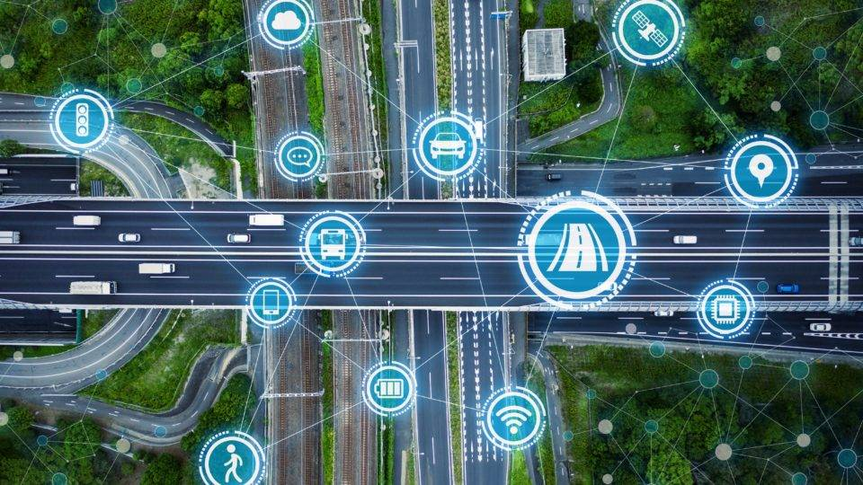

Transporte
Definição e Objetivo
Em uma cidade inteligente, o transporte não é apenas infraestrutura — é um sistema integrado, automatizado e orientado por dados. O objetivo é garantir mobilidade eficiente, segura e sustentável, aproveitando tecnologias digitais e conectividade.
- Integração Multimodal:
Ônibus, metrô, bicicletas e aplicativos de transporte são planejados para funcionar juntos, com um único pagamento ou aplicativo. - Monitoramento em Tempo Real:
Sensores, GPS e big data permitem rastrear tráfego, identificar congestionamentos e ajustar sinais de trânsito automaticamente. - Veículos Elétricos e Autônomos:
Incentivo ao uso de carros elétricos, ônibus elétricos e testes de veículos autônomos para reduzir poluição e acidentes. - Incentivo à Mobilidade Ativa:
Planejamento urbano que prioriza ciclovias, calçadas seguras e espaços para pedestres. - Plataformas Inteligentes:
Aplicativos que informam horários, rotas otimizadas e alternativas em tempo real.
Características
- Curitiba
Famosa pelo sistema de BRT (Bus Rapid Transit), que é referência em transporte rápido e organizado. - Singapura
Sistema de pedágio eletrônico inteligente que ajusta tarifas conforme o nível de tráfego. - Barcelona
Sensores que priorizam ônibus e ambulâncias nos semáforos.